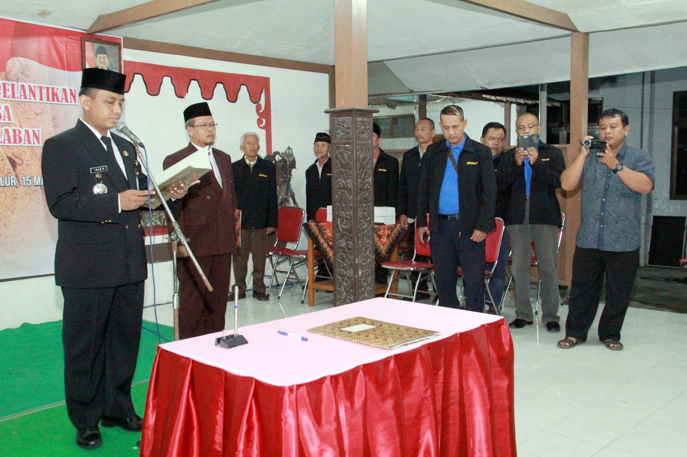
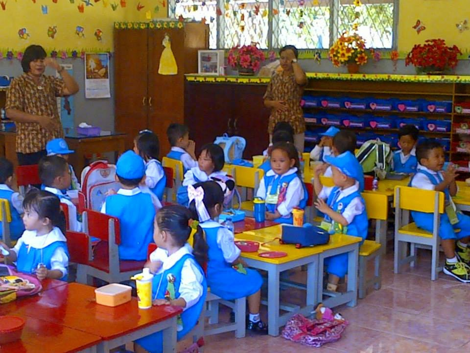
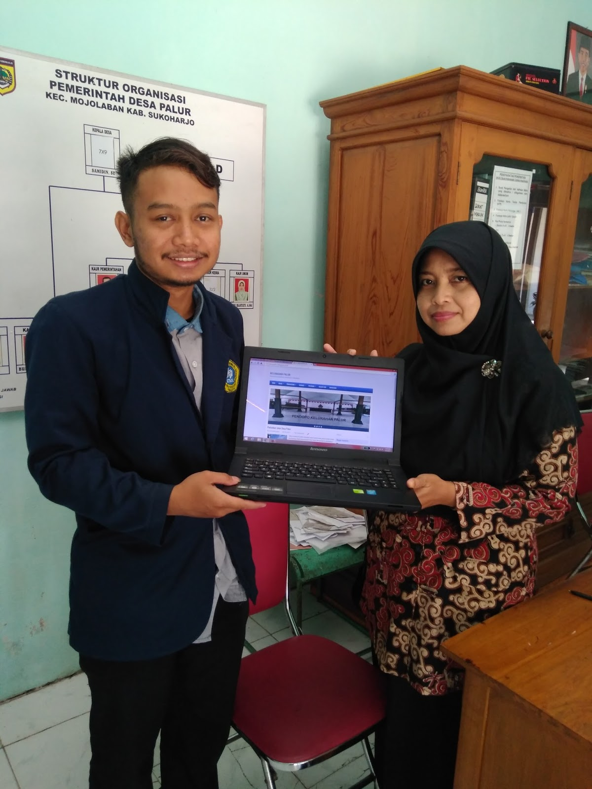
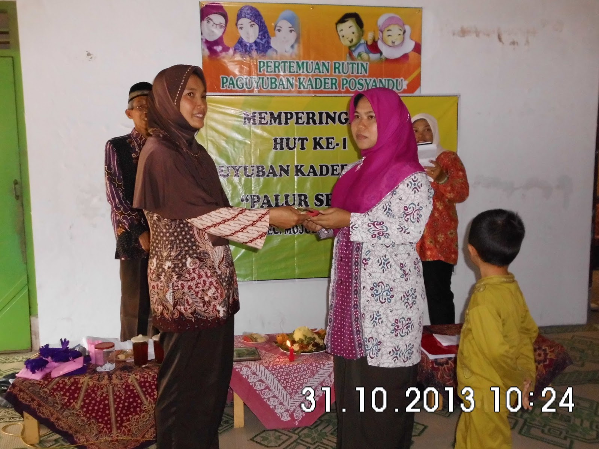

Galeri Foto Dokumentasi Desa Palur
Arsip Foto Otentik Kegiatan Pemerintahan, Pendidikan, Kesehatan, dan Keterbukaan Informasi Desa
- Semua Koleksi (8)
- Pelantikan Kepala Desa (2)
- PAUD Mawar (2)
- Teknologi Web Desa (2)
- Kader Posyandu (2)

Pelantikan Kepala Desa (Foto 1)
Upacara khidmat pelantikan dan pengambilan sumpah jabatan pimpinan Pemerintah Desa Palur.


Pelantikan Kepala Desa (Foto 2)
Suasana prosesi pelantikan bersama jajaran saksi dan tokoh muspika Kecamatan Mojolaban.

PAUD Mawar Palur (Foto 1)
Aktivitas belajar sambil bermain anak-anak usia dini di lembaga PAUD Mawar Desa Palur.


PAUD Mawar Palur (Foto 2)
Kebersamaan anak didik PAUD Mawar bersama para bunda pendidik PAUD Desa Palur.

Sosialisasi Website Desa
Pemaparan sistem pengelolaan portal informasi desa kepada perangkat dan perwakilan tokoh warga.


Penyerahan Website Desa
Serah terima resmi sistem website desa sebagai sarana pelayanan publik warga Palur.

Pengurus Posyandu (Foto 1)
Pertemuan koordinasi para kader posyandu wanita dalam mempersiapkan layanan gizi balita & lansia.


Pengurus Posyandu (Foto 2)
Kader posyandu Desa Palur bersama bidan desa dalam pencatatan dan monitoring kesehatan warga.